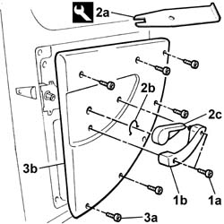

7020E34 rear door flap interior panel - r+r
- Path
- Procedures > 70 FITTINGS > 7020 LOAD CARRYING COMPARTMENT DOORS > 7020E rear swinging door > 7020E34 rear door flap interior panel - r+r
- Kind
- repair procedure (removal / refitting; the operation number is the code)
- Applies to
- all engines; all production periods
- Interactive page
- https://sloeber94.github.io/elrnDB-fDbl/en/#/2585082
Applies to: all engines; all production periods
 Removing
Removing
 Refitting
Refitting1. Undo the fixing bolts (1a) and remove the handle (1b).
2. Using the tool (2a), remove the retaining clip (2b) and remove the door opening control lever (2c).
 | Name | Country |
|---|---|---|
2a | Tool | 1.878.034.000 |
3. Undo the fixing bolts (3a) and remove the internal panel (3b).

Applies to: all engines; all production periods
Refitting
RemovingPosition the internal panel and fix it with the bolts.
Fit the door opening control lever and fix it with the retaining clip.
Fit the internal handle and tighten the bolts.
Topics that link to this page (9)
- 5050C42 rear wiper motor - r+r
- 5505B42 wiring built into load compartment left rear door flap r r
- 7020E18 rear door flap opening limiter - r+r
- 7020F12 Load carrying compartment rear swing door central locking LOWER LOCK - R.R.
- 7020F16 Load carrying compartment rear swing door central locking UPPER LOCK - R.R.
- 7020F22 rear swinging door exterior handle - r+r
- 7020F26 Rear swing door LOCK for key. - R.R.
- 7020F34 rear swinging door lock interior mechanism - r+r
- 7020F36 REAR SWING DOOR LOCKING DEVICE. - R.R.